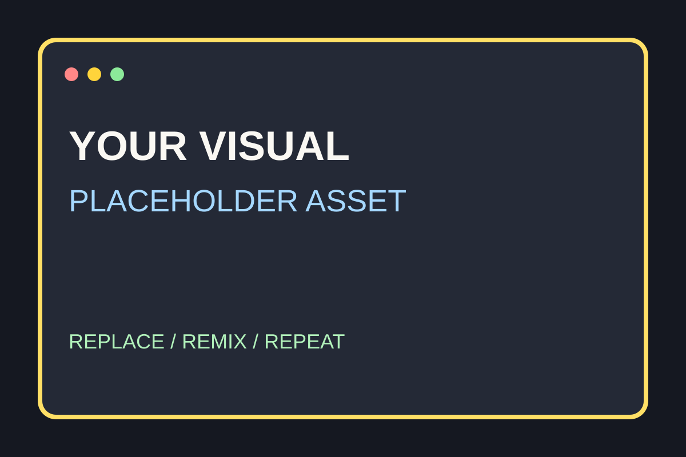

01 / FIRST NOTE
PROJECT SHARE / YOUR DATE你的内容是什么？
给动画找一个长期的家
让动画流通起来
不是交付一个孤零零的 demo，而是把它变成可以被找到、被使用的资产。

一张海报，也可以是一套工作流的入口。
02 / THE FRICTION
THE PROBLEM做完以后，发生了什么？
every time
重新翻文件
找版本、改路径、确认入口。下次复用又从零开始。

一个文件夹，不等于一个可复用的资产。
一个文件夹，不等于一个可复用的资产。
看起来完成了 ✓
文件夹
demo
导出视频
03 / THE QUESTION
WHAT IF像前端组件一样管理动画
一个动画资产，应该有
名字 · 预览 · 版本
先看清楚它是什么，再决定要不要带进自己的项目。
方便拿去用 →
可以继续改 ✎
04 / ASSET WALL
ASSET / PLACEHOLDER从素材，变成可复用资产
收藏 / 安装 / 维护
U
MOTION ASSET
先预览，再决定
页面上看清楚效果，再带到本地工作流继续改、继续用。
不是截图，是入口
05 / TWO LAYERS
DIVISION OF LABOR[工具 A] 和 YOUR SYSTEM，谁负责什么？
H
MAKE THE MOTION
[工具 A]
创作、预览、时间线、渲染。把动画本身做出来。
U
MOVE THE ASSET
YOUR SYSTEM
整理、展示、搜索、安装、更新。让内容流通起来。
不是替代
接在后面的那一层 →
06 / PACKAGE IT
FROM PROJECT TO PACKAGE把动画整理成一套规范的包
⌘
STRUCTURE
有页面
入口清楚，素材和组件不再散落。
◌
DISCOVER
有预览
先确认适配，再进入项目。
↻
VERSION
能更新
包可以被搜索、安装和维护。
07 / WHO BENEFITS
ONE WALL / MANY HANDS同一个资产，不同的人都能接住
✦
DESIGNER
交付得更清楚
不再是一堆没人敢动的文件夹，而是有结构的动画包。
</>
FRONTEND
不用重造
看到合适的效果，就接进项目再调整。
◎
AGENT
更容易理解
入口、素材、运行方式都被整理好了。
稳定的格式 = 少一点猜
08 / THE MISSING LINK
THE WORKFLOW GAP做出来以后，别让它消失
发现？
复用？
更新？
维护？
复用？
更新？
维护？
以前：怎么把动画做出来
现在：
做出来以后怎么办
YOUR SYSTEM 补上 [工具 A] 工作流里缺的那一环。
没人管的空白
→ 变成团队资产
→ 变成团队资产
09 / THE LAYER
NOT A REPLACEMENT不是替代，是接力
HYPERFRAMES
生产动画
把想法变成会动的东西。
YOUR SYSTEM
让它流通
让动画被搜索、预览、安装、复用。
TEAM
持续积累
一次交付，变成长期资产。
10 / KEEP BUILDING
NEXT / 继续完善
内容不止被交付，
还可以被持续使用。
更好的展示页、更完整的检查、更顺滑的安装和更新体验。
YOUR SYSTEM × [工具 A]
这个方向会很有意思 :)
see you next time